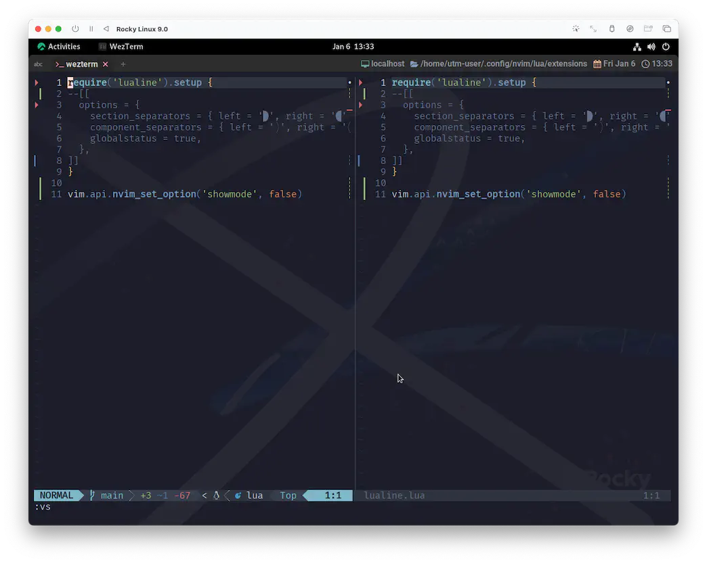
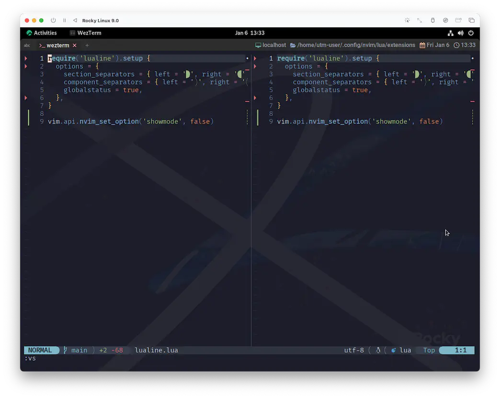
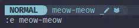
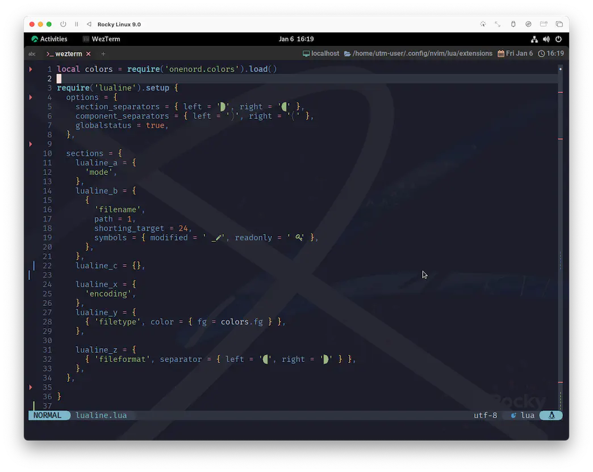

lualine.nvim Part Ⅱ
今年もよろしくね🤗
このまま未来に突き進んでいくのも良いんですが、ちょっと心残りがありました。
もちろんlualine.nvimです。
2023年早々、いきなり過去に戻ってしまいますが、lualine.nvimのカスタマイズから初めます❗
...まあ、たった数週間なんですけどね😮 この程度なら "時速 88 マイル" も "1.21 ジゴワット" 1 も必要ないでしょう。
あ、でもブラウザの表示幅が 750px あるといいです。
これがあるとNerd Fonts
2
に対応したフォントセットが使用されるように仕組んであるんです、実は❗
lualine.nvimに関するサンプルコードにはNerd Fontsがいつもより多めに入ってるので、
PCならブラウザのウィンドウを横に広げてみたり、タブレットなら横表示にしてみたり、よかったら試してみてね☺️
ちゃんと綺麗にコードが見られるよ😆
改めて明記するんですが、このサイトに記載されているカスタマイズは "完全に" わたしの好みで作ってあるし、 あくまでもそれらに対してコメントしていくってだけなので、「汲み取れるものがあったら組み込んでもらえれば〜」ぐらいの感じです。
...と、言うことで❗
いよいよ あのシーンまで戻っていきます...。
いよいよ これから
きみの ものがたりの つづきだ❗
ゆめと ぼうけんと❗
ｎｅｏｖｉｍの せかいへ❗
レッツ ゴー❗
... ... ... ...
Hey, CaP..., you read me...?
(キャップ...、聞こえるか...?)
...It's nvim Trainer. Can you hear me...?
(...nvimトレーナーだ。聞こえるか...?)
...❗
I'm back. ...I'm back from the future!!
(わたしは戻ってきたんだ。...未来から戻ってきたんだ!!)
On your next.
(次を見てみろ。)
options
ここからが本番です。頑張っていきましょう❗
まずはベースとなる設定を2つ。
separators
SEPARATORS
lualine defines two kinds of separators:
lualine は2種類のセパレータを定義しています。
- `section_separators` - separators between sections
セクション間のセパレータ。
- `component_separators` - separators between the different components in sections
セクション内の異なるコンポーネントを区切るセパレータ
options = {
section_separators = { left = '', right = '' },
component_separators = { left = '', right = '' }
}
Here, left refers to the left-most sections (a, b, c), and right refers to the
right-most sections (x, y, z).
ここで、left は左端のセクション(a, b, c)を、right は右端のセクション(x, y, z)を意味します。
まあ細かいことは後にしましょう。これはもう例示されている通りにやっちゃいます😆
require('lualine').setup {
options = {
section_separators = { left = '', right = '' },
component_separators = { left = '', right = '' },
},
}
globalstatus
globalstatus = false, -- enable global statusline (have a single statusline
-- at bottom of neovim instead of one for every window).
-- This feature is only available in neovim 0.7 and higher.
グローバルステータスラインを有効にする
(各ウィンドウに1つではなく、neovim の下部に1つのステータスラインを表示する)。
この機能は、neovim 0.7以降で利用可能です。
これはデフォルトで無効になっているので有効化しましょう。
optionsの中に追記してください。
Check: options
ここまでで以下のように見た目の変化があるはずです。
| before |
|---|
|  |
| after |
|  |
separatorsを変えることによって、ステータスラインがやわらか〜な印象になりましたね。
また、global statuslineによってウィンドウを分割してもステータスラインは常に一つだけが表示されるようになりました。
なんだか無理やり押し込まれたような窮屈な表示も解消されていて、とってもいい感じですね😆
Sections
さて、separators項で出てきたこれ。
Here, left refers to the left-most sections (a, b, c), and right refers to the
right-most sections (x, y, z).
Lualine has sections as shown below.
Lualineには以下のようなセクションがあります。
+-------------------------------------------------+
| A | B | C X | Y | Z |
+-------------------------------------------------+
Each sections holds its components e.g. Vim’s current mode.
各セクションは、例えば Vim の現在のモードのような構成要素を保持します。
わかりやすいですね😉
この6つのセクションがsection_separatorで区分けされます。
ひとつのセクションの中に2つ以上の機能を入れて表示することもできます。
この場合はcomponent_separatorsで更に区分けされます。
statusline
じゃあ、とりあえずやってみましょう。わたしはこんなんしてます😉
-- onenord.nvim のカラーパレットを取得する
local colors = require('onenord.colors').load()
require('lualine').setup {
--options = {
-- (省略...)
--},
-- options と同列に並べてください。
sections = {
lualine_a = {
'mode',
},
lualine_b = {
{
'filename',
newfile_status = true,
path = 1,
shorting_target = 24,
symbols = { modified = ' _', readonly = ' ', newfile = '' },
},
},
lualine_c = {},
lualine_x = {
'encoding',
},
lualine_y = {
{ 'filetype', color = { fg = colors.fg } },
},
lualine_z = {
{ 'fileformat', icons_enabled = true, separator = { left = '', right = '' } },
},
},
}

あらかわいい🥰
Components
なんとなく察しがつくかと思いますが、lualine_aがセクションAに対応しています。
B, C と X, Y, Z も同様です。
で、それぞれのセクションの最初にある文字列が機能(コンポーネント)を指定しています。
基本機能の一覧は次の通り。
branch(git branch)buffers(shows currently available buffers)diagnostics(diagnostics count from your preferred source)diff(git diff status)encoding(file encoding)fileformat(file format)filenamefilesizefiletypehostnamelocation(location in file in line:column format)mode(vim mode)progress(%progress in file)searchcount(number of search matches when hlsearch is active)tabs(shows currently available tabs)windows(shows currently available windows)
以下については、それぞれ詳細が示されています。
filename:h lualine-filename-component-optionsfiletype:h lualine-filetype-component-optionsfileformat:h lualine-fileformat-component-options
lualine_yのcolorsとか、lualine_zのseparatorとかは、それこそわたしの趣味です。
もうほんとに見た目だけ❗

うん、こんな感じですね😉
To Be Concluded...
lualine.nvimは...❗ なんと...❗
まだ続きます😮
やっぱりここはボリュームがありました...。 でも区切りとしてはとても自然だと思うので、やっぱり思い切ってもう一回だけ跨ぎます😆
次回、lualine.nvim PartⅢ に続く。続くったら続く...🐈🐈🐈
1: Back to the Future の世界ですね。 “gigawatt”（ギガワット）を誤って“jigowatt”（ジゴワット）と書いた脚本がそのまま採用されたんだって。 (どういう誤り方❓😑) wikipediaより。
2: ryanoasis/nerd-fontsから拝借してます。
3: Language Server Protocolの略。 Microsoftが開発したものがオープンスタンダードになっているそう。 その辺はwikipediaで❗